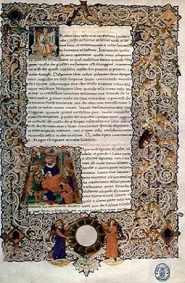
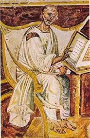

Труд Аврелия Августина «О граде Божьем», написанный в 414 и 415 гг., имеет важное историческое, политическое и социальное значение. Августин установил тесную связь между варварством и христианством. Он отдает всю будущую историю варварству, т. е. миру
новому, для которого как бы уготована новая религия. Блаженный Августин отмечает со снисхождением опустошения, убийства, грабежи; все это повторялось при завоевании Рима. Он удивляется этому милосердию варваров и приписывает его влиянию
самого Господа. Его изумляет, что обширные базилики были назначены варварским вождем для людей, искавших убежища от погрома и разрушения. В книге «О граде Божьем» Аврелий Августин проводит параллель между варварскими вторжениями V
века, нашествием галлов и проскрипциями Мария и Суллы.
Наша власть началась недавно, говорит Августин о христианстве; она не имеет связи с таким развратом и испорченностью. Ваши предки, говорит он о язычниках, сделали войну ремеслом и поработили соседние народы Востока. Роскошь, мотовство
и разврат были естественными последствиями римских побед. Праздность римлян была результатом переполнения рабами Италии. Не мы, не христиане, наполнили Италию рабами; не мы поставили их ниже животных; не мы заставляли их исполнять
работы, которые должны были нести скоты
 Чтобы соединить различные народы империи, надо создать нечто большее, чем мирские узы; эти узы нашлись только в христианстве. И вот возникает «град Божий», «царство Божие». Очистительный
огонь варваров истребит язычество и сделает его достойным града Божия. Этому Божьему царству предстоит тысячелетие. В обновленных стенах града Божьего не будет честолюбия, жажды к славе; там будет царствовать мир и справедливость;
там настанет святая жизнь о Господе. Августин возвестил, что наступает новый мир, новая история.
 Вот что должны были отвечать христиане язычникам и вот в чем суть блистательного труда святого Августина. Церковь возлагает всю ответственность за несчастья на язычников. Мало того,
Церковь со страниц «Града Божьего» отрешает римлян от истории и бразды империи предает варварам и потому-то снисходительно смотрит на гонителей, если только эти гонители христиане. Надо заметить, что Августин в конце своей жизни, когда
книга «О граде Божьем» сделалась известной, должен был раскаяться в своих словах.
То, что было сформулировано Августином, стало убеждением на римском Западе. Из этой веры как бы исходила политика Запада. Византийский Восток еще остерегался этому верить. На Западе же было решено, что империя должна уступить
место варварским королевствам. Ученые теологи Запада с книгой «О граде Божьем» в руках поддерживали господство варваров и за это получали, конечно, большие права и привилегии. Два начала, варварство и церковь, соединяются и идут рука
об руку. Вот почему средневековая история приняла такой клерикальный характер. Особенно хорошо учение Августина было принято в Галлии, где варваров было очень много. Проспер, богослов из Аквитании, книгу «О граде Божьем» в стихах и
сверх того сам написал особое сочинение о призвании народов, где радуется грандиозному перевороту, который совершился в его время. Христианские проповедники старались воспевать достоинства варварских предводителей. Каждый из них стремился
быть дружным с варварским конунгом, но вместе с тем в глубине души испытывал сочувствие к римлянам.